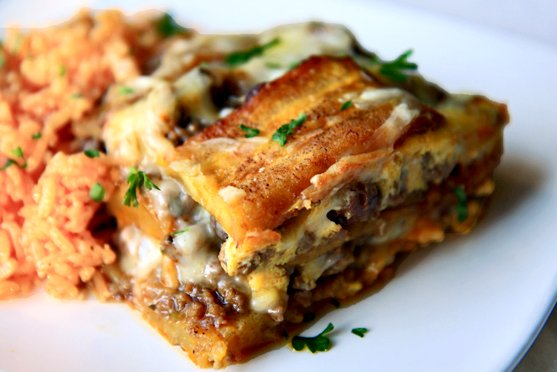

Pastelón
Puerto Rican Plantain "Lasagna"
- 5 plantains
- 1 pound of ground beef
- 1 white onion
- 1 green pepper
- 2 cups Cheddar cheese
- 2 large eggs
- 1 cup tomato sauce
- 1/2 cup vegetable oil
- 1 teaspoon capers
- 1 teaspoon dried oregano
- 1 teaspoon Adobo seasoning
In a skillet heat up the oil, add the sofrito, peppers, onion, and tomato, and cook for about 2 minutes or so. Add the meat and cook until done, breaking down the meat as you go. Add tomato sauce, capers, salt and black pepper. Stir and set aside.
Heat up the plantains in the microwave until hot. Then mash them down slightly using a fork. Pray the bottom and sides of a 9-inch pie plate with oil and layer with slices of plantain (these come already cooked) - about half the box. Layer half the meat over that, sprinkle with a it of cheese, then more plantains and then the rest of the meat. Sprinkle cheese over the last layer. Pour the egg as evenly as you can over the cheese.
Cook at 400 degrees for about 20 minutes until egg is cooked and cheese is melted. Serve warm.
This is a delicious side dish with rice or a great lunch with a salad. It is also a great 'cover dish' recipe.